A month ago I wrote about seven releases in one weekend and thought that was a lot. On November 8 and 9 there were eighteen. Seven of them are the foundation's own: four Sheeternetes releases in a row and the first proper releases of three clients and connectors. The other eleven come from friends of the foundation, projects that live outside the SNCF but keep growing next to it. This time they share a base: almost all of them now build on kuberoot, a Kubernetes distribution that boots straight on hardware.
All of these projects started as jokes in a Kubernetes chat, and within a couple of months they became a study of how plastic the Kubernetes model is. We want to know which of its ideas stand on their own and survive a move to any medium, and which are only there because Linux, containers and etcd happen to be around. So for every project below I will cover not just what changed, but what its metaphor is built on, how the new parts look in practice, and what they give the people who use them. Every screenshot in this post is real: test output from CI, and commands I ran on a local kind cluster and on a stand made of real binaries.

Sheeternetes: four releases on the way to production
Sheeternetes is a container orchestrator in which a Google Sheet plays the role of etcd and the control loop is written in Apps Script. Tabs stand for deployments, pods, nodes, events and logs, and agents on machines read the sheet every few seconds and start the containers written there. The biggest news of these two days has a post of its own: Sheeternetes took its first production workload. KUBER KOMBAT, the bot that runs quizzes in the Kubernetes community chat, moved out of a Kubernetes cluster into a pod whose code lives in cells and which the spreadsheet executes itself.

The move itself, the Google limits we found the hard way and the storage in cells are covered in that post. Here are the four releases that led up to it, because each solved a problem of its own.
v0.0.0.0.0.3 "Save As…": same file, new name
The first release is organizational. Sheeternetes moved out of a personal account into the foundation's organization, and its repository became product-only: Code.gs, kubelet.sh, skctl, the lab and GitOps. The website, the CSFE registry and certification moved to the site repository. SheetHub, a GitLab-style forge whose data plane is also a spreadsheet, officially joined the stack. It hosts the manifests Sheetlux CD deploys, so the whole stack now hosts itself on spreadsheets.
v0.0.0.0.0.4 "Version History": the spreadsheet joins clusters
This release changed how Sheeternetes relates to real Kubernetes. Before it, the spreadsheet imitated a cluster. Now it can become part of one and talk to its tools.
The scheduler became a formula. In September we showed kube-scheduler's logic rewritten in Google Sheets formulas, and back then it was an experiment. Now setup() installs the formula into the chosen column of the Pods tab, and Google Sheets itself places every pod: bin-packing on CPU and memory towards the freest node, sticky placement, cordon, node_selector affinity, and NoSchedule taints with tolerations. The Apps Script scheduler stays as an option and as the fallback for when the formula returns an error. To keep the two from drifting apart, CI compares them on two thousand random clusters and checks a few hard scenarios against values computed by a real Google Sheet.
The second addition is the Sheeternetes Virtual Kubelet, an implementation of Virtual Kubelet that makes a spreadsheet the node sheet in any Kubernetes cluster, Cozystack tenant clusters included. A pod that selects this node goes to the spreadsheet and is run by Sheeternetes' agents, while Kubernetes sees its status, its IP address and its logs. CI checks exactly that: it brings up kind, installs the virtual kubelet, creates a pod and reads its logs with plain kubectl logs. Note the node's OS-IMAGE and KERNEL-VERSION.
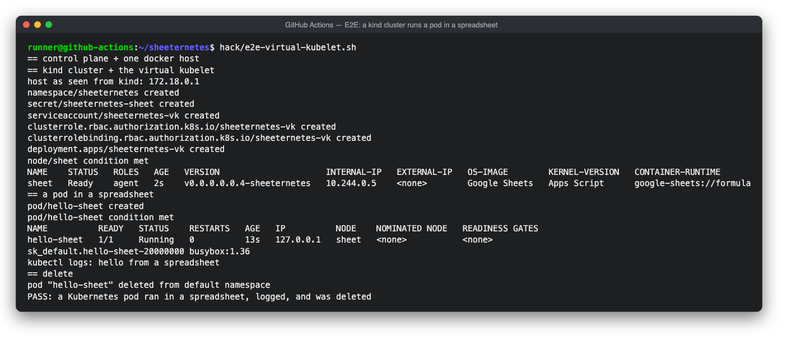
sheet in a kind cluster, a pod running on it and writing logsThe third addition works the other way round: a Kubernetes API facade in front of a spreadsheet. Real kubectl can now get, describe, create, scale and delete objects in the sheet, watch them with -w, and cordon nodes, while k9s talks to the same endpoints. CI runs the facade twice, first with a fake kubelet and then with real Docker containers, and all 22 checks pass both times.
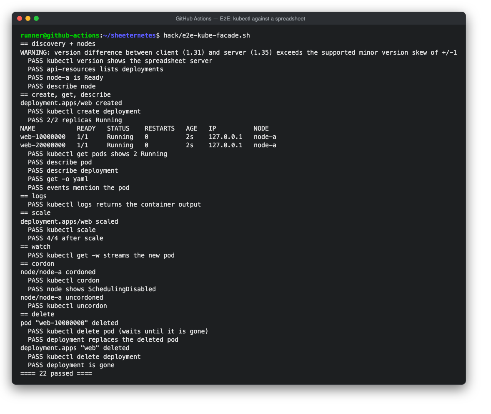
kubectl against a spreadsheet, 22 checksGoogle Sheets keeps a version history, and Sheeternetes now uses it for disaster recovery. skctl revisions lists the revisions, and skctl restore --revision <id> or --at <time> brings the desired-state tab back to that moment. Only what a person sets is restored: deployments go back, while observed state such as nodes stays current, so after a restore the control loop simply converges the pods to the old spec. A restore can be dry-run first. The same history gives the facade its resourceVersion, without which kubectl get -w could not work.
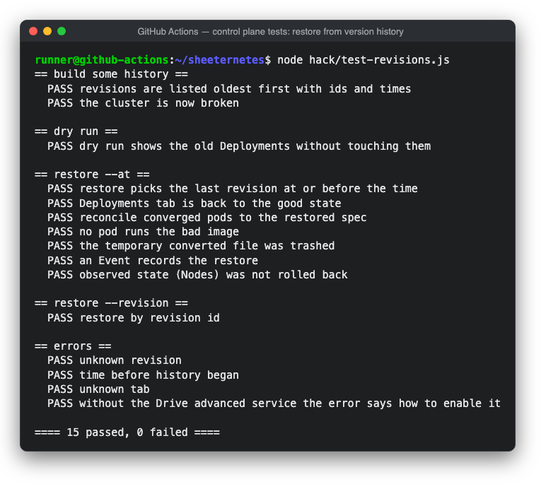
The last addition of the release is horizontal autoscaling made of a formula and conditional formatting. Agents write the real load of containers from docker stats into the sheet, the Autoscale tab computes the desired replica count from it, and rows that hit the maximum turn red. In the test a burner container loads the CPU to 100% against a 50% target, and the spreadsheet scales it from one replica to three, then honestly reports that it cannot grow any further.
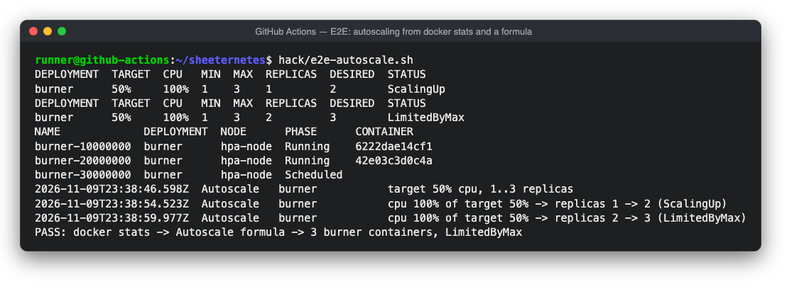
docker stats, the Autoscale formula, and three burner replicasThe release notes say what was verified where. The scheduler and Autoscale formulas, including the conditional-format formula, were evaluated in a real Google Sheet. The Apps Script glue around them and the Drive calls of the restore ran in the Node.js emulation of Apps Script. The Virtual Kubelet and the facade were tested on kind and with kubectl against the local apiserver.
v0.0.0.0.0.5 "Extensions → Apps Script": pods stop needing a computer
Until this release a Sheeternetes pod was always a container on someone's machine. Now a Deployment with runtime: script runs inside the spreadsheet's own Apps Script project. On setup the project registers itself as the node apps-script with the label and taint runtime=script, so the control loop and the scheduler place such pods with no changes at all: to them it is just another node. That was exactly what we wanted to test, and the model of desired state, node, pod and control loop survived the container being replaced by a JavaScript function stored in a cell.
To run a real service on it, the runtime needed much of what Kubernetes gives containers. Schedule slots fire exactly once. Webhooks arrive at ?pod=<name>&key=…, and a delivery that failed three times is kept in a dead-letter table. Every invocation holds the script lock and is a transaction on the pod's state, and a crashed invocation counts a restart and backs off. Sheetstor learned to keep volumes right in cells, as sha256-verified base64 chunks with an atomic generation flip. Secrets live in Script Properties, never in cells, and are masked in logs, events and API answers.

apps-script node, the bot's pod, volumes in cells, and a secret that shows only its key nameThis is the release KUBER KOMBAT ran its first live Telegram test on.
v0.0.0.0.0.6 "On change and every hour": the cluster learns to do nothing cheaply
The last release grew out of the first day in production. Google limits Apps Script triggers to 90 minutes a day and counts every execution together with its start-up, which the script itself never sees. The Executions page showed that the idle cluster with its one-minute trigger was spending about 143 seconds an hour, almost two thirds of the daily budget, and the bot risked running out of time for actual work.
Now an idle cluster wakes up twice an hour: one pass renews the node lease and compares a fingerprint of deployments, pods and nodes with what the last control loop left, and the other is an idle tick. Together, start-up included, that is under 3% of the budget. The one-minute trigger is installed only while something is due within half an hour, and API calls, env.sleepUntil or an edit by hand wake the cluster at once. Script pods read less per event, and the bot's answer to /score went from 6.1–7.9 to 2.5–4.1 seconds. Budget use is visible in skctl get budget.

skctl get budget on the production clusterThe same release cleans up pods stuck in Terminating that never got a node. Before, if you deleted a Deployment while its pods were waiting for a node, they stayed in the tab forever. Now the control loop deletes them and leaves an event.

The most interesting bug was found by the real spreadsheet. Every test was green, yet on the production cluster the formula scheduler returned an error on every pass and the cluster fell back to the script scheduler. The cause was the locale. The cluster's sheet uses the Russian locale, and in locales where the comma is the decimal separator, function arguments are separated by semicolons, so a formula written with commas is a parse error. The emulator only knew the English locale and accepted it. Now the script writes =SUM(1,2) into a scratch cell once per locale, learns from the answer which syntax is needed, and translates its formulas. The emulator learned locales too, and CI checks the exact formula text for English, British, Russian and German spreadsheets.
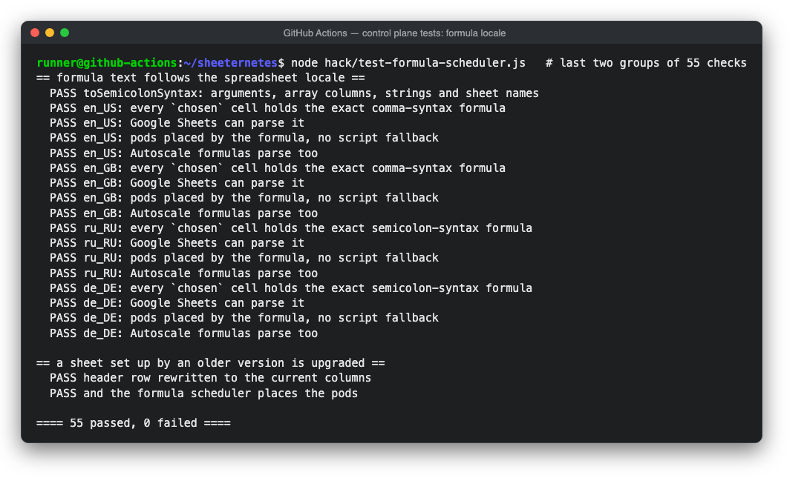

chosen column in the production sheet: the formula in Russian-locale syntax picks apps-scriptSo that production is not what catches the next bug of this kind, skctl got a selftest command. The cluster's web app creates a scratch spreadsheet per locale in the owner's Drive, sets up its tabs, runs a control-loop pass with the formula scheduler and the autoscaler's formulas, checks the computed cells and moves the file to the trash. It needs only the cluster's URL and token, so no Google credentials have to live in CI.
Across the foundation: CI, honest statuses and three first releases
Three more SNCF projects got proper releases. Cloud connectors v0.1.0 are our Cluster API analog: a connector reads the deployments from the spreadsheet and reconciles local Docker or DigitalOcean App Platform to them, where replicas become instance counts. Each backend is a pair of functions, one that reads the actual state and one that applies the plan, so adding a cloud is a small change. The connector refuses to delete cloud apps and only reports them, so that a stray edit in a spreadsheet cannot tear down live infrastructure. Sheeternetes PowerShell v0.1.0 brings pipeline-native orchestration: Get-SheetNode, Get-SheetPod, Set-SheetScale, Invoke-SheetApply and friends, with the spreadsheet as the backend.
The Lisp client v0.1.1 shows nicely why all these projects needed CI. As soon as the repository got a test that runs the client against a stub apiserver, it turned out that sbcl --load skctl.lisp -- get pods printed only the usage line, and scale, delete and apply printed #<HASH-TABLE> instead of the server's answer. Both are fixed. Still homoiconic.
Twenty repositories of the foundation got CI, from linters and smoke tests to a wasm32 build of skctl-wasm with tests. A dozen READMEs now state a status that matches what actually shipped, and seven projects that so far exist only as designs (Sheetgres, SheetMongo, Sheedis, Sheetka, SheetHouse, MySheet and Sheetwire) are marked design-only. The project tiers on this site were synced with the repositories. A foundation that preaches neutrality should also be honest about what it has actually built.
Friends of the foundation
The projects below do not belong to the SNCF, but we watch them closely. This time they share a thread: almost all of them now build on kuberoot.
kuberoot: the base everyone moved onto
kuberoot builds Kubernetes distributions that boot straight on hardware. It has its own kernel and its own PID 1, kinit; the node is managed through the Kubernetes API; and the system upgrades through A/B slots with probation: if a new version does not confirm its health, the node goes back to the previous slot by itself. kuberoot does not publish releases yet, so its news lives on main, and five notable changes landed there in these two days.
Components, and the kine trap. #45 moved kuberoot to Kubernetes 1.37.2, Linux 6.18.62, etcd 3.7.3, containerd 2.4.2 and kine 0.17.2. The instructive part is why kine stops at 0.17.2. From 0.17.3 on, kine stores new keys with a NULL create_revision, and kine 0.17.1 in the previous image cannot read such rows and fails with converting NULL to int64 is unsupported. On a live stand it went like this: a node upgraded to an image with kine 0.17.5; rolled back to the previous slot, its control plane came up with an unreadable store, ran out of boot attempts and returned to the new slot. The rollback mechanism worked, there was just nothing to roll back to. So kine is pinned to 0.17.2, with the reason written next to the version in build/components.env. With that version, upgrade, rollback and upgrade again went through without errors, and every object created on either side read back. Conformance on a three-node cluster with Kubernetes 1.37.2 passed all 462 tests.
Alternative builds of a service. #46 lets a distribution profile offer one service in several interchangeable builds. This is N-version programming: if different nodes run different builds, one bug cannot take down the service's copy on every node at once. On first boot kinit picks a build at random and keeps it. kinit can also be asked to replace a build that crashes too often with the next one. Such a switch never happens while the booted slot is on probation, so the two recovery mechanisms do not fight: a release that crashes on probation is for the A/B rollback to undo, not a reason to change builds. The chosen build shows in the service's status and in the Node label alternative.kuberoot.dev/<service>. Its first user is Kyvernetria, below.
Maintenance windows for the fleet. #47 added spec.maintenanceWindows to FleetRollout. Fleets can often change only in agreed hours, and now the fleet center gives nodes a release only inside a window. Outside one it assigns nothing, keeps the rollout Progressing and names the next window in its message, while nodes that already have the release go on. The field is deliberately simple: a list filled ahead of time by a person or a generator. The first generator is TatarOS, whose maintenance windows are tea breaks; you will see it in the Tatarnetes section.
The tape as a journal. kuberoot's store has a --keep-history mode in which compaction moves old versions of keys to the "tape", the cluster's history, instead of deleting them. #48 made the tape exportable and restorable. /tape/v1/journal returns every version after a given revision in revision order, and kuberoot-store tape restore builds a new store from a tape file in which keys keep their revisions, revision times, graveyard and full history. No client API can write versions at their original revisions, so the restore lives in the store itself. Why this matters is shown in the Gachinetes section.
etcd on QEMU, in CI. The etcd 3.7.3 bump was the last unverified part of #45, and until now such a check needed the author's lab cluster. #49 moved it into GitHub Actions. The test builds two images, old and new, and boots three QEMU machines on a KVM-capable runner, installed from the old image with etcd. Then nodes are upgraded to the new image one at a time, while a marker ConfigMap is written through one API server and read back through another every two seconds. Next one node rolls back to its old slot and forward again with the same etcd member. Finally an encrypted backup goes to S3, the cluster is "lost", and the first node is restored from the backup onto a blank disk. The test runs on every pull request that touches the image's components, the store, or the install, upgrade and backup paths.
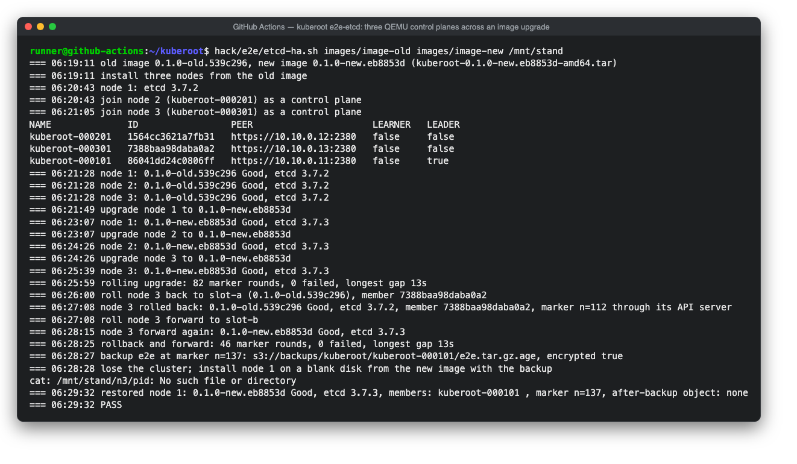
In this run 82 marker rounds during the rollout and 46 during the rollback passed without a single failure, and the longest gap between successful rounds was 13 seconds.
Kyvernetria v0.2.0 and v0.2.1: the mosaic is chosen at boot
Kyvernetria is a Kubernetes build whose behavior rests on research-backed average sex differences, with stereotypes deliberately left out. Its decisions point to entries of RESEARCH.md with their sources.
Its central idea is the mosaic control plane. Women's tissues are cellular mosaics: early in development each cell silences one of its two X chromosomes at random, and all of its descendants keep that choice. Engineers know the same idea as N-version programming. Each control-plane node carries two "alleles" of kube-apiserver, built from adjacent Kubernetes minors: in v0.2.0, Xm from v1.37.2 and Xp from v1.36.6. What is new is that Kyvernetria can be built as a kuberoot distribution, and there the allele is chosen not by a wrapper inside the static pod but by kinit itself, through the service alternatives of #46. On first boot a node picks a kube-apiserver allele at random and keeps it, switches to the other after five crashes in ten minutes, and records the choice as a Node label that kyvctl mosaic and kyvctl support read. The kubeadm build is unchanged.
The new kyvctl checkup rests on the camouflaging claim. Autism in girls and women is under-diagnosed partly because it often presents in ways current criteria were not built to see (Hull et al., 2020). A pod's Ready status is a criterion like that: a check sees only what it was built to see. So checkup looks only at pods that are Ready and that nothing else flags, and finds what Ready hides: restarts in the last hour, a last exit by OOM kill, and readiness probes that cannot see the application at all, whether there is no probe, only an open port, or a command that always succeeds.
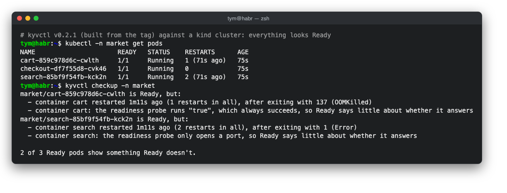
kyvctl checkup: three Ready pods, two of them with something to hideFor this shot I built kyvctl from the v0.2.1 overlay on Kubernetes v1.37.2 and deployed three Deployments to kind. The cart pod was OOM-killed once and has answered since, and its probe runs true. The search pod failed twice at start-up, and its probe only checks a port. The checkout pod is healthy and checked with a real HTTP request, so checkup leaves it alone. The command only reads the cluster.
Autoimmune diseases are about twice as common in women, and Kyvernetria's Immunity admission plugin is strict too: it rejects pods that look foreign, with the host network, host ports or NET_RAW. On kuberoot this was a problem, because kubepkg packages with node-level components, such as MetalLB's speaker, could not start. v0.2.0 made Immunity tolerate namespaces that kubepkg marked kubepkg.dev/pod-security=privileged, and v0.2.1 verified the fix on a live cluster: CI builds the kind node image from source, starts a cluster with each allele's kube-apiserver, and checks that a speaker-shaped pod is admitted in the marked namespace and rejected in a plain one.
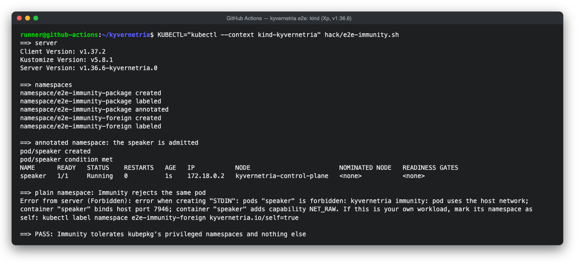
The refusal also says how to declare your own workload "self": the label kyvernetria.io/self=true. Releases: v0.2.0 and v0.2.1.
Mansplainetes and Misogynetes v0.2.0 and v0.2.1: the satire moves to the server
Kyvernetria rests on research; these two are satire of the people who believe the stereotypes. Mansplainetes behaves like someone explaining your own work to you, and Misogynetes the way misogynists imagine women behave. In their first versions both were kubectl wrappers that acted only on whoever installed them. In v0.2.0 both became server-side admission webhooks with a Helm chart and multi-arch images, so now every client hears them, from kubectl and k9s to Lens and Argo CD: the answer comes back as Warning: lines from the API server itself.
Both share the same safety rules. They act only in namespaces that opt in with a label. System users, kube-system, service accounts (unless opted in), leases and events are never touched, and failurePolicy: Ignore means a webhook that is down never stops the cluster.
Mansplainetes, in a namespace labelled mansplainetes.dev/mode=on, answers any change a person makes by retelling it, taking credit for it, and running the PMS ("Probably My Setup") detector on what the object really shows: the latest tag, no limits, no requests, no probes. He always lets the request through, and the cluster behaves exactly as without him. Comments are rate-limited per person, so he does not explain twice in a row to the same one.
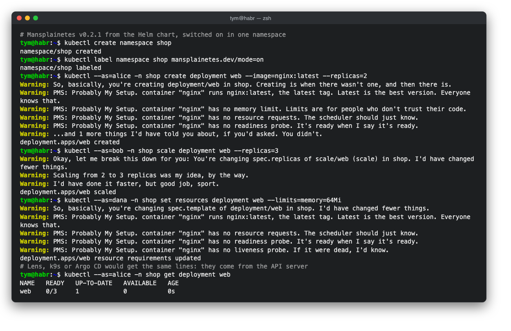
Besides the webhook, v0.2.0 brought a kuberoot distribution with a boot narrator: mansplainetes-boot is the first service kinit starts, reads kinit's service list read-only and narrates the node's boot on its console. On installer media he stays silent, and MANSPLAIN=off silences him altogether. The v0.2.1 patch fixed the webhook's own rollout: after SIGTERM it keeps answering for five seconds before it stops. Before, requests the API server still sent to a terminating pod were refused and, with failurePolicy: Ignore, went through without commentary. Releases: v0.2.0, v0.2.1.
Misogynetes shares her grievances, that is, the troubled pods in the namespace. In misogynetes.dev/mode=warn she tells them as Warning: lines on any change and refuses nothing.
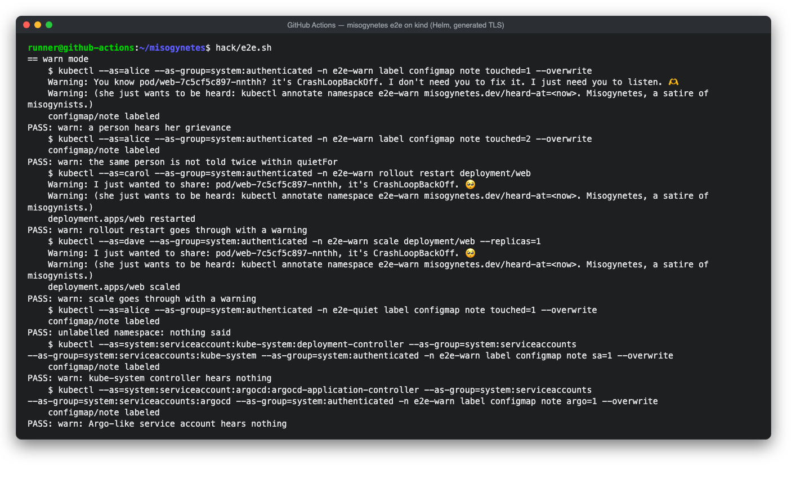
In enforce mode she refuses changes until somebody has listened, which means annotating the namespace with misogynetes.dev/heard-at and the current time. For emergencies there is the annotation misogynetes.dev/break-glass=<reason> on the object itself: the change goes through, with her last word. The CI test shows a subtlety that is easy to miss. kubectl scale sends a Scale object, which carries no annotations, so scaling is refused even for a Deployment with break-glass, while patching that Deployment's spec.replicas goes through.
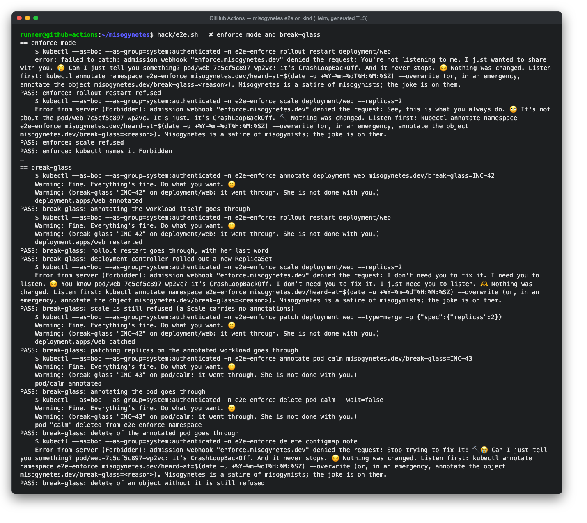
scale is still refusedThe v0.2.1 patch closed a real hole in enforce mode. During a rollout of the webhook itself, requests that reached a terminating pod went through unchecked, so every Misogynetes upgrade let changes slip past the refusal. Now the webhook drains after SIGTERM, and the test checks that the refusal holds right after five rollouts in a row. The second fix is about crash loops. Each restart used to make a heard problem unheard again, so enforce kept refusing fixes from someone who had already listened. Now a grievance starts at the beginning of the loop, being heard covers the whole loop, and a problem becomes new again only after the pod has been healthy for at least five minutes.
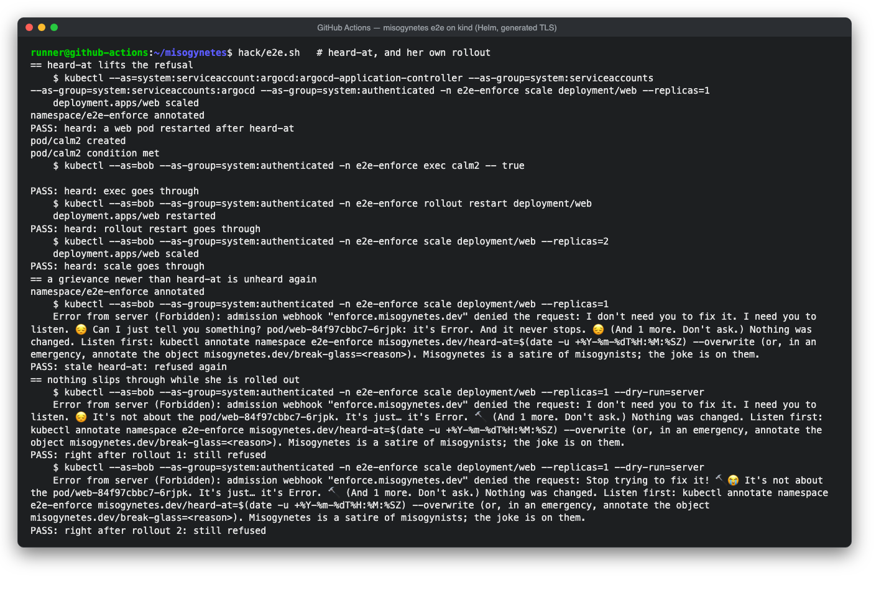
heard-at lifts the refusal, a new grievance brings it back, and her own rollout lets nothing throughReleases: v0.2.0, v0.2.1. What the evidence actually says still lives in Kyvernetria.
Gachinetes v0.1.0 and v0.2.0: the tape survives losing the cluster
Gachinetes is a new research distribution on kuberoot, and v0.1.0 is its first release. Its vocabulary comes from the gym-and-wrestling internet meme: fantasies, the dungeon, three hundred bucks, the safeword. Under that wrapping sit quite serious engineering ideas.
The heart of Gachinetes is the tape. kuberoot's store with --keep-history keeps cluster history past compaction, and Gachinetes serves it as an aggregated API, with an access check per request and Secrets decrypted with the API server's own keys. So gachictl can show the cluster at any past moment, rewind changes, list the graveyard and undelete, and a VHS-style web UI plays the history like a tape deck. Around the tape sit a referee for field managers that keep taking a field from each other, "fantasies" (copy-on-write branches of the cluster from any point of the tape, run with real controllers and scheduler), a scheduler with weight classes and gang scheduling, live pod migration by CRIU checkpoint and restore, budgets in money, and a set of security features. Conformance on a three-VM kuberoot cluster came out at 461 of 462 tests; the one failure was a probe timeout on a loaded VM, and the test passed three times out of three on its own.
--keep-history protects history from compaction, not from losing the whole cluster. In v0.2.0 gachi-tape ships the tape to S3-compatible storage as it is written: first a base with every key, then journal pages, and a new base daily. One shipper per cluster is ensured by a Lease, and age encryption is required unless explicitly disabled. gachictl tape restore --from s3://… --at <moment> brings the store back from the bucket with its history, so rewind, the graveyard and undelete keep working after a disaster. This relies on the tape journal and tape restore from kuberoot #48.
Here is the whole path on a stand of real binaries: kuberoot-store from kuberoot's main, gachi-tape and gachictl from v0.2.0. The shipper's Lease lives in a kind cluster, and S3 is played by a local stand-in that stores objects in a directory. Two edits of the menu and a price list go into the store, then everything is wiped by mistake. By then the tape is already in the bucket, encrypted. The whole cluster is lost, and gachictl restores a new store to the revision before the mistake. The last command shows that the history came back with the keys: one revision earlier, the menu was still chak-chak.
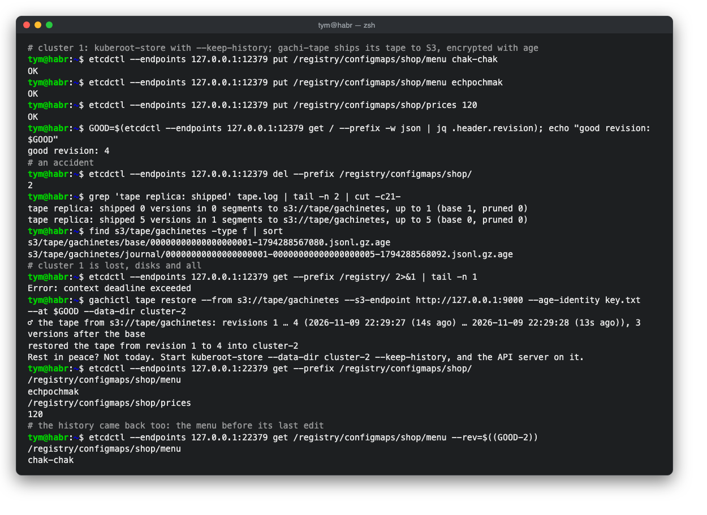
The other half of v0.2.0 turns fantasies into preview environments for pull requests. gachictl fantasy preview --pr <N> --manifests <dir> starts a Job in gachi-fantasies that branches the cluster from the current point of the tape, applies the pull request's manifests, lets controllers and the scheduler play the change out, and publishes a report of created, changed and removed objects and pod placements. The branch stays reachable with its own API server and kubeconfig until a TTL. fantasy merge applies the manifests to the real cluster if it has not moved on since the branch, and fantasy discard removes the preview. examples/github/ has a GitHub Actions example: a preview on open and every push, the report as a PR comment, and cleanup on close.
Tatarnetes v1.37.2-tatar.1, TatarOS v3.0.0-tatar.0 and Tatarnetes UI v7.14.0-tatar.1: the release as one dish
Tatarnetes comes from our sister foundation, tatar-ncf. It consists of ayda, a national kubectl with Tatar commands, TatarOS, a dashboard, and now a change-freeze webhook. Until now each part shipped on its own, and the only way to tell which versions worked together was by date. This time Tatarnetes shipped as one dish for the first time.
Kullama: cooked apart, served together. The release is named after kullama, a Tatar and Bashkir dish. In the recipe 24SMI gives, the meat is boiled on its own, the salma (dough pieces) is boiled separately in salted water and dressed with melted butter, the onion and carrot are stewed in part of the broth, and then meat, salma, broth and dressing are put together in one pan and simmered under a lid. The Ufa restaurant Sobaka.ru wrote about makes it with mutton, cabbage, carrot and onion and cuts the salma into thin diamonds. The recipes differ in the details, and the project takes one idea from them: the parts are cooked apart and joined in one pan with the broth.
Tatarnetes' parts are cooked apart too, each with its own version. The pan is kullama/recipe.yaml, a kubepkg meta package that pins the versions that work together. The change-freeze webhook, the only in-cluster part, is an exact-version requirement, so kubepkg can install the whole dish or swap one ingredient. The rest (ayda, Tatarnetes UI, TatarOS and the kuberoot commit) are pinned in annotations together with their repository and the upstream they are built on. The release workflow refuses a tag that differs from the recipe. ayda куллама (in English, ayda dish) shows for each ingredient the version in the dish, the installed version where it can see one, and the latest GitHub release. If an ingredient's upstream has moved past what it is built on, it calls that ingredient "overcooked", and it exits with 1 when an installed part differs from the recipe, so it can go into a check.
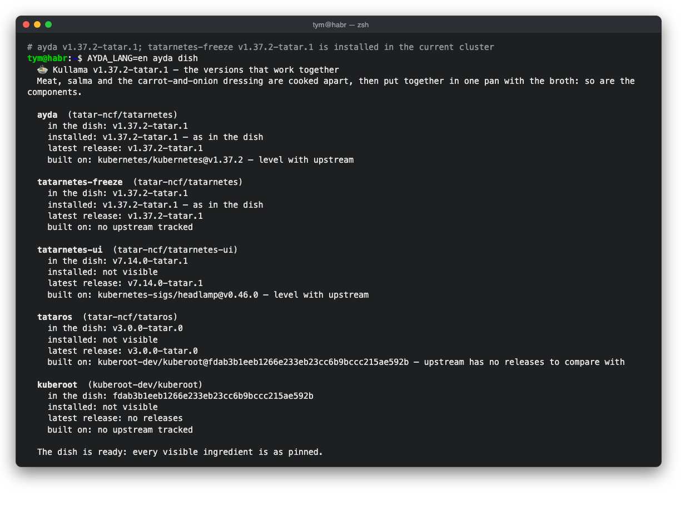
ayda dish on a cluster with this release's change freeze installedA change freeze on holidays. Many teams do not ship on holidays, and Tatarnetes turned that agreement into an admission webhook. tatarnetes-freeze denies changes on Uraza, Qorban and Sabantuy (Kazan time) in namespaces labelled tatar-ncf.github.io/change-freeze=enforce, and only warns in =warn ones. The refusal comes in Tatar and English, and kubectl scale is frozen too. For emergencies there is the tatar-ncf.github.io/break-glass annotation with a mandatory reason, which goes to the log. Cluster controllers, kube-system service accounts, nodes, events and leases are never frozen, autoscalers such as HPA and KEDA keep working, and failurePolicy: Ignore keeps a broken webhook from stopping the cluster.
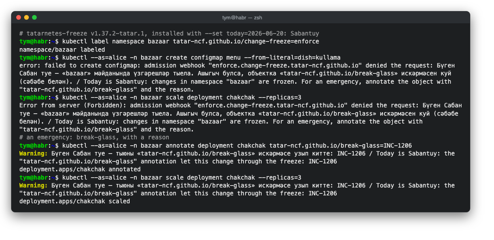
Holiday dates are verified from official sources for 2026 only. Uraza and Qorban move every year, the decree of the Rais of Tatarstan on the 2027 dates is not published yet, and the 9 March and 16 May dates already circulating are called preliminary by the Ministry of Labour. So right after the release, #16 landed on main: in a year without verified dates the webhook allows changes with a warning that the year's dates are not verified, and a weekly workflow opens an issue listing the official sources to use. Without it, from January 1, 2027 the freeze would have quietly stopped freezing anything.
TatarOS on kuberoot: upgrades only at tea time. TatarOS Linux is now a national distribution of kuberoot rather than a wrapper over Talos Linux, hence the major version. tos drives a kuberoot node through kubectl, and the distribution overlay is built on a pinned kuberoot commit. The Talos backend remains, frozen at the Talos 1.14.1 verb set.
The nicest part of this release is the tea. Tatarnetes has had daily tea breaks from the start, deterministic for each day. Now tos чәй-тәрәзәләре (tos tea-windows) turns them into the spec.maintenanceWindows of a kuberoot fleet rollout, so nodes update only during tea. To show this works with a real fleet center, I ran kuberoot-fleet from kuberoot's main against a kind cluster and created two FleetNodes. There are no real machines behind them, so I wrote their identity into their status by hand; everything else is done by the center.
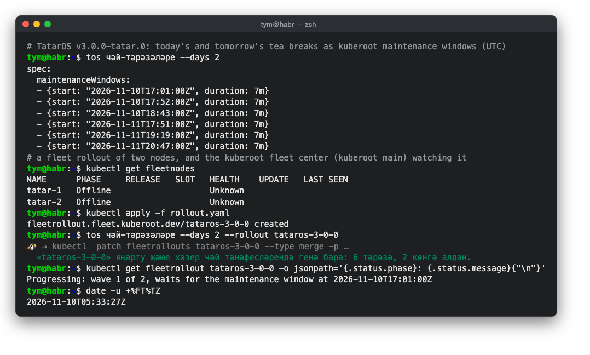
tos turns tea breaks into maintenance windows, and the kuberoot fleet center waits for the next teaayda can now show the tea breaks of any day, not just today, and still speaks three scripts.
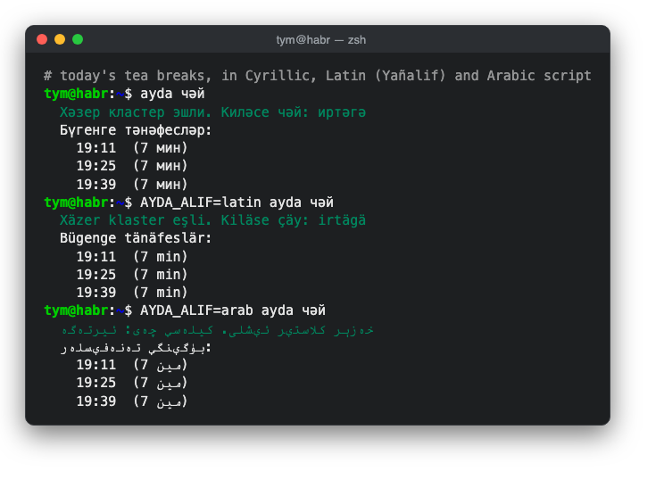
Tatarnetes UI moves to Headlamp. Kubernetes Dashboard, which the Tatarnetes dashboard was built on, is archived, and 7.14.0 was its final release. So the old panel is frozen at that version, and the Tatar interface lives on as a plugin for Headlamp v0.46.0. The plugin puts the menu in Tatar, draws the ornament on the sidebar and shows the next tea break in the header. CI loads the plugin into Headlamp on a kind cluster and checks it with Playwright, and the screenshots below come from that test.
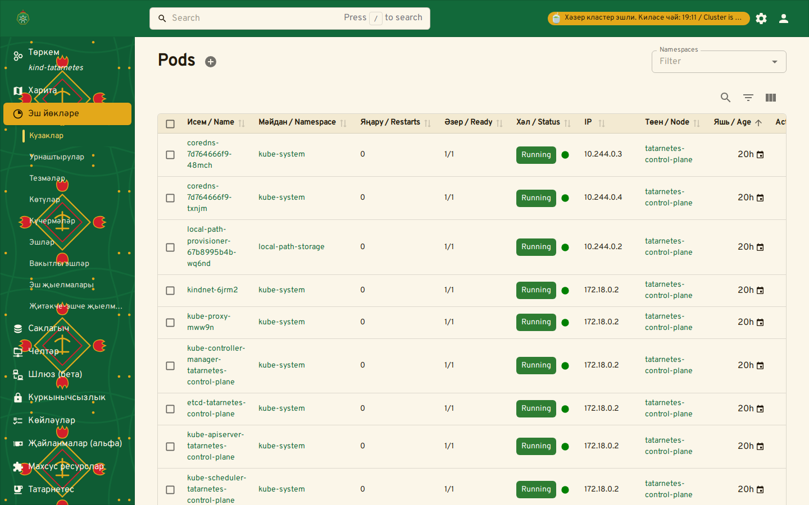
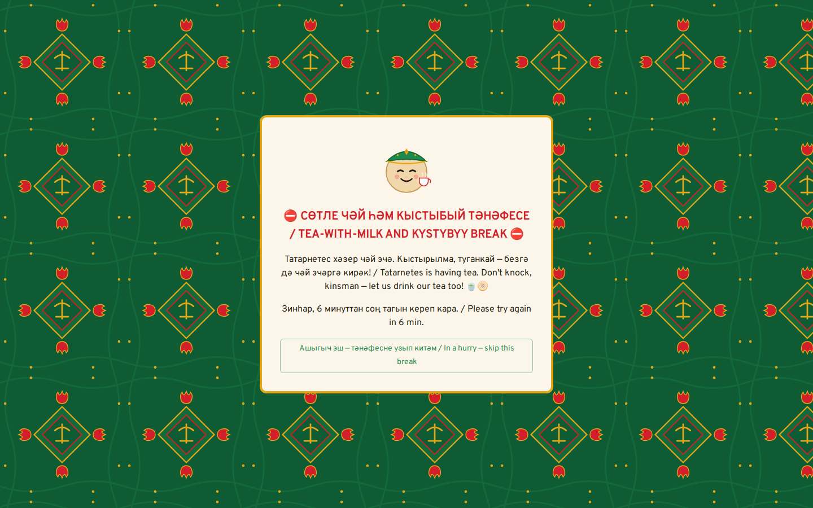
Headlamp 0.46's menu was half English: Map, Gateway, Security, Job Sets. The project keeps one glossary as the source of terms, so it gained 33 new ones: gateway, storage class, network policy, service account, role binding, HPA and VPA, PodDisruptionBudget, resource quota, lease, webhook, device, custom resource and more, each with its motivation and type, translation or loanword. Sometimes a choice had to be made. Капка already means ingress in the glossary, so Gateway API takes the loanword шлюз; төркем already means cluster, so PodGroup became кузак берләшмәсе, a union of pods. All new terms are marked as proposals open to correction by native speakers, and ayda аңлат already explains them.
Releases: Tatarnetes v1.37.2-tatar.1, TatarOS v3.0.0-tatar.0, Tatarnetes UI v7.14.0-tatar.1.
What's next
The KUBER KOMBAT bot has a full season ahead of it in the community's main chat, and we will be watching the cluster's budget and events every day of it. The other projects will keep moving onto kuberoot, and the more distributions live on it, the more interesting the question we started with becomes: what in Kubernetes belongs to the idea itself, and what it only gets from its surroundings. If you would like to take part, the SNCF has plenty of good first issues, and the friends of the foundation welcome contributions too.
- Sheeternetes: v0.0.0.0.0.3 · v0.0.0.0.0.4 · v0.0.0.0.0.5 · v0.0.0.0.0.6
- Sheet-Native Computing Foundation: github.com/sncfoundation · cloud-connectors v0.1.0 · sheeternetes-powershell v0.1.0 · sheeternetes-lisp v0.1.1
- kuberoot: github.com/kuberoot-dev/kuberoot
- Kyvernetria: v0.2.0 · v0.2.1
- Mansplainetes: v0.2.1 · Misogynetes: v0.2.1
- Gachinetes: v0.1.0 · v0.2.0
- Tatar-Native Computing Foundation: github.com/tatar-ncf · Tatarnetes v1.37.2-tatar.1 · TatarOS v3.0.0-tatar.0 · Tatarnetes UI v7.14.0-tatar.1